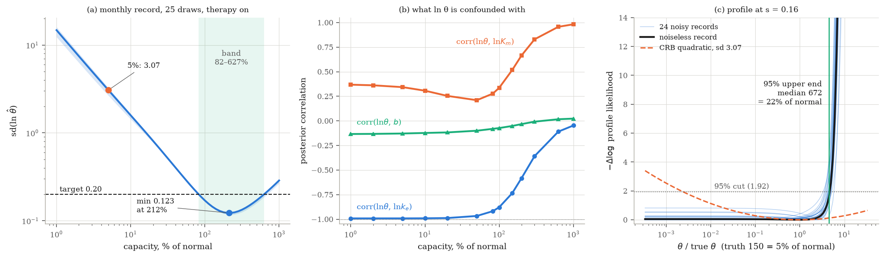
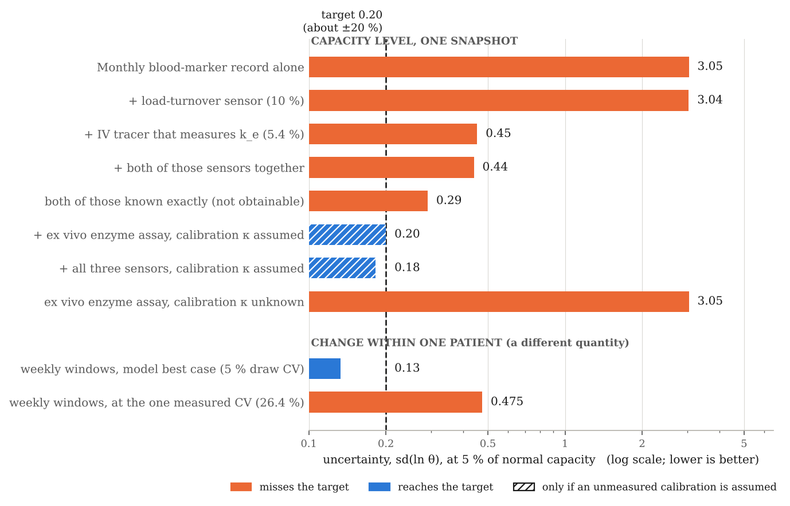
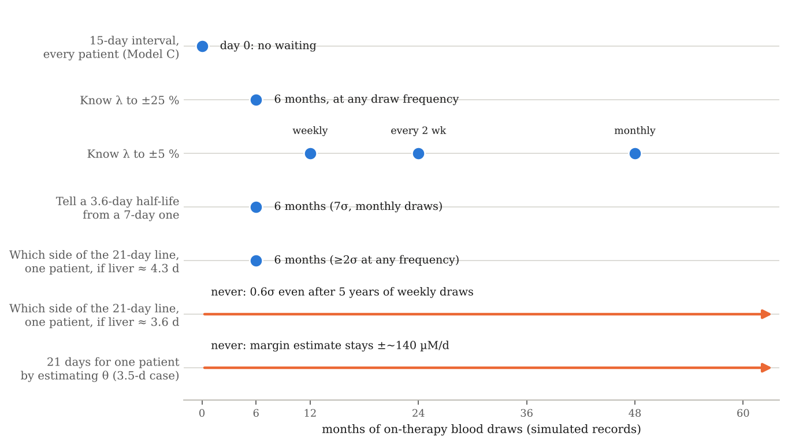

PCC Capacity Study Recap
What the study asked, what it found, and where it stopped, in plain language. It starts by checking your own summary point by point.
What these numbers are. This is a design study on a simulated model, not an analysis of patients. Every number comes from one simulated patient whose enzyme works at 5% of normal, with 25 monthly blood draws over two years while on therapy. The "24 records" in the early rounds are 24 diet histories of that one patient. The results describe the managed, stable state between crises. They say nothing about an untreated or decompensating patient.
Is your summary right?
Two independent reviewers graded each of your five statements against the report. They agreed on every verdict.
-
The problem was resolution, and adding more sensors fixed it. Sensor fusion was the key.
Not rightSensor fusion was tested and it did not fix the problem. Adding a tracer that measures the other clearance route and a load-turnover test took the uncertainty on capacity from 3.05 to 0.44. That is seven times better, but still more than twice the 0.20 target. Even with both of those quantities known exactly it stays at 0.29. Only a direct reading of the enzyme reaches the target, and only if its calibration factor is assumed known. Nobody has measured that factor in humans. This work also came in the middle of the study, not at the end.
Rounds 6–10 · R-G -
We wanted to quantify the uncertainty, and we used the pencil plot.
Partly rightQuantifying the uncertainty was the goal from round 1, and the number (3.05) came from the Fisher information and from simulation. The pencil plot came at the very end, in round 18. It is a picture and an independent check of that result: it explains why capacity cannot be pinned down, and it changed no number.
Round 1 onward; pencil in round 18 · R-Q -
After that, we reduced the uncertainty enough that the system could be evaluated.
Not rightThe uncertainty on the patient's capacity never reached the target by any route the data support. What changed was the question. The dosing decision turned out not to need capacity at all. It needs λ, how fast the drug's enzyme boost fades, and that can be pinned down. Change within one patient can also be tracked, because the unknown constants cancel. Both of these came before the pencil plot, not after it.
Rounds 3 and 11–17 · R-D, R-J to R-P -
We measured how long we had to wait before knowing whether a patient may need fewer injections.
Partly rightYes, round 13 asked exactly this, on simulated records. The answer has three parts. The 15-day interval needs no waiting. λ is known within about 6 months. The 21-day interval never becomes available by watching one patient's record and estimating their capacity. Rounds 15–17 then moved the 21-day answer: it depends on λ's true value, which sits on a knife-edge (section 6).
Round 13 · R-L, revised in R-N to R-P -
We compared the current dosage with something a little more permissive.
Partly rightRight in spirit, but the comparison was about the interval between injections, not the dose amount. The current schedule is every 14 days. The more permissive options were 15 days (a small step) and 21 days (a large one), compared at the same average amount of drug delivered. So a longer interval means fewer, larger injections, not less drug.
Rounds 11–17 · R-J, R-L
In one sentence: the patient's enzyme capacity was never measured well enough, by any means, so the study changed the question. The dosing decision needs one protein half-life instead, and the one human measurement of it sits about 1.5% from the value that decides the 21-day interval.
The model in one line
At steady state, the propionate load a patient takes in is cleared by two routes: the defective enzyme (PCC) and everything else.
- m
- the marker, the metabolite level measured in each blood draw
- θ
- enzyme capacity, the patient's own PCC working capacity. Normal is 3000; the study patient has 150 (5%).
- ke
- the other clearance route, everything that removes the metabolite apart from PCC (5 in the model)
- Km
- the level at which the enzyme runs at half speed (100)
- Δ(t)
- the drug's boost to enzyme capacity. It peaks after each injection and fades with half-life ln2/λ until the next one.
Uncertainty is quoted as sd(ln θ), the spread on a log scale. The target 0.20 means roughly ±20%. 0.69 means a factor of 2 either way. 3.05, the study's baseline, means a factor of about 21 either way, which is no measurement at all.
Nineteen rounds
- Rounds 1–2Tasks 1–7, F1–F6
Can the blood record measure capacity?
No. At 5% of normal the record gives 3.05 against a target of 0.20, about 15 times too wide. More draws, pooling records, better estimators and short test experiments all fall short at clinical precision. The one test design that passes needs a research-grade assay and the drug's scale known exactly.
- Round 3R9–R16, R-A to R-D
Why not, and what survives
The information about θ only appears when the metabolite is pushed toward saturation, past the model's crisis threshold, so no safe design gets there. Two things survive: a ceiling (capacity is at most about 31% of normal) and change within one patient, which reaches 0.13 because the unknown constants cancel.
- Rounds 6–10R-G, R-H, R-I
More sensors, other models, the literature
Sensor fusion, a saturating model (B) and a carnitine model (C) all fall short for the same reason. This gives the study's general result: every route to absolute capacity needs one constant that has never been measured in humans.
- Round 11R-J
The question changes
Which interval to book is a condition on the trough just before the next dose. The drug's boost dominates it, so the decision turns on λ, not on θ.
- Rounds 12–14R-K, R-L, R-M
Reading λ, and timing each step
Simulated on-therapy records pin λ to about ±5.5% in two years. Round 13 timed each step (section 5). Round 14 set a method rule: read log-scale spreads from the Fisher information, check yes/no safety decisions by simulation.
- Rounds 15–17R-N, R-O, R-P
λ is measured, and it sits on the knife-edge
A human value exists: 3.6 days, from skin cells. The 21-day decision flips at 3.5452 days. The liver value is unmeasured; the best estimate is about 4.3 days. The study ends on two data requests.
- Round 18R-Q
The pencil geometry
The PI's picture of each blood draw as a line. It shows why capacity cannot be pinned, agrees with every earlier number, and changes none.
- Round 19R-R, this page
This recap, and one correction
Writing this recap turned up one claim in rounds 16–17 that overstated what the trial record can settle. It is corrected in the report and in section 6.
REPORT.md does not label rounds 4 and 5 separately; their work is filed under round 3's close-out and R-G.
Where it started: 3.05 against a target of 0.20
With today's monthly blood draws, a patient at 5% of normal capacity cannot be told apart from a patient with a weaker enzyme and a faster other clearance route. The two produce the same blood levels. Statistically, θ and ke are correlated at −0.99, and not knowing ke accounts for about 98% of the uncertainty in θ.

Round 18's pencil plot shows the same problem as geometry. Each blood draw gives one straight line of possible (θ, ke) pairs, like a compass bearing to an unknown position. On the real record every bearing comes from almost the same direction, because every line has slope −1/(Km + m) and m stays far below Km. The lines barely cross, and the position smears along a long sliver.

Every fix tried, on one scale
Over rounds 1–10 the study tried more draws, pooled records, better estimators, test experiments, extra sensors, and two other model structures. The chart puts the sensor results and the within-patient result on the same scale.

t26, t27; change: t22, t42.The general result. A blood measurement can tell you about θ in only two ways. It can go through the mass balance, which needs the shape of the other clearance route. Or it can read the enzyme directly, which needs a calibration constant. Either way one constant is needed that has never been measured in humans. That is why sensor fusion stalls, and it holds in all three model structures the study tried.
Why change within one patient works. Those unknown constants belong to the patient. They are the same in two time windows, so they cancel when you compare the patient with themself. Weekly draws in two windows give 0.13, enough to detect a rise of about 45% or a fall of about 30%. Two cautions: this is the model's best case, assuming 5% scatter per draw. At the only measured serial variability (26.4%, in healthy adults) it is 0.475. So monitoring works only if real patients' marker variability is below about 10%, which nobody has measured.
One recommendation costs nothing: record antibiotic status. Gut bacteria make part of the propionate load. An unrecorded antibiotic course between two windows fakes a rise in capacity of 3 to 20 times. It always looks like improvement, and antibiotics are often started when a patient is getting worse.
From "how much enzyme?" to "how often to inject?"
In round 11 the study turned to the decision the therapy actually forces: which interval between injections to book. The drug's boost is large compared with the patient's own capacity. Just before the next dose, the boost from a 14-day schedule is still 400 µM/d, against the patient's own 150. The same fact that hides θ in the blood record makes θ less important for the booking.
Under the parent paper's carnitine model (Model C), the safety line is 151 µM/d. The 14-day boost clears it for every patient, whatever their own capacity. The report calls this a weaker claim than it sounds, because the drug removes the decision rather than resolving it. It is also a testable prediction: the fortnightly schedule should control every patient, which can be checked against the trial's reported fall of about 70% in the C3 marker. Choosing a personal interval among 7, 10 and 14 days from the record is not possible: under Model A's convention it is right 61% of the time against a 52% base rate, with no patient clearly decided.
How long do we have to wait?
This is your question 4, answered by round 13 on simulated records and updated by rounds 15–19.

t46, t52.Where it ended: one half-life on a knife-edge
In round 15 the study found a human measurement of λ: PCC turns over with a half-life of 3.6 days in human skin cells (Chandler & Ballard, 1985). The repository had assumed 3.5 days, from scaled rodent data. That guess was close by luck, but the difference matters. Under Model C the 21-day interval is safe for every patient, with no need to know their capacity, only if the half-life is above 3.5452 days. The assumed value is just below that line. The measured value is just above it.

The value that matters is the liver's, and it has not been measured. PCC sits inside mitochondria. The typical liver mitochondrial protein turns over in about 4.3 days, a little slower than the 3.6 days measured for PCC in skin cells, so the best estimate for liver PCC is about 4.3 days (plausible range 3–6 days). That makes the 21-day step about 65–70% likely to be safe for everyone, but the range still straddles the line.
One correction from this round. Rounds 16–17 said the trial's own on-therapy record "settles the side of the crossing". It does not, in general. The record can tell a 3.6-day half-life from a 7-day one within about 6 months. But 3.6 days is 43 times closer to the crossing than it is to 7 days. If the liver value is near 4.3 days, one patient's record settles the side within about 6 months. If it is near 3.6 days, no single patient's record ever will: even five years of weekly draws reach only 0.6 standard deviations. Pooling a few dozen patients could do it, but only if λ is the same in everyone, which is also unmeasured (t52, R-R).
What is still open
The analysis is finished. What remains is data.
- Request the trial's on-therapy marker record (NCT04159103, through the trial sponsor). It reads λ directly and settles the 21-day question, unless the true value is right on the knife-edge.
- Request the Gao et al. model parameters (corresponding authors Wei Gao and Linh Van, Moderna). Their population model contains a human-fitted turnover constant that is not public.
- Measure the within-patient marker variability in stable patients. The report calls this the most valuable outstanding measurement, because it decides whether monitoring works.
- Record antibiotic status in the load record, starting now. It is free, and it prevents a false "improvement" signal.
- Check Model C's prediction against the trial's reported C3 fall: if any patient is under-controlled on the 14-day schedule, the model's safety margin or λ is off.
A few notes for the full report
| Quantity | What it measures | Best realistic value | Target met? |
|---|---|---|---|
| sd(ln θ) | the patient's capacity level, one snapshot | 3.05 (record); 0.44 (sensors) | No |
| sd(ln θ₂ − ln θ₁) | change within one patient | 0.13 (model) to 0.475 | Only in the model |
| sd(ln λ) | the drug boost's decay rate | 0.055 (2 yr, monthly) | Yes, in simulation: ±25% within 6 months, ±5% in 1–4 years |
| margin spread | the 21-day safety margin for one patient, via θ | ±~140 µM/d, flat | Never |
Which method produced a number. Since round 14, spreads on a log scale (every sd(ln θ), sd(ln λ)) are read from the Fisher information, which gets them right. Yes/no safety decisions and natural-scale margins are read from simulation, because the Fisher information was shown to mislead there by about 450 µM/d.
Same quantity, different printed values. 3.05, 3.07 and 3.08 are the same baseline from different scripts and noise conventions. 3.05 is the headline.
Which model. The capacity results are mostly Model A (linear clearance). The "safe for everyone" dosing results use Model C's safety line (151 µM/d). Under Model A's conventions the safety line is higher (430 µM/d at routine load), and the 14-day trough of 400 no longer clears it.